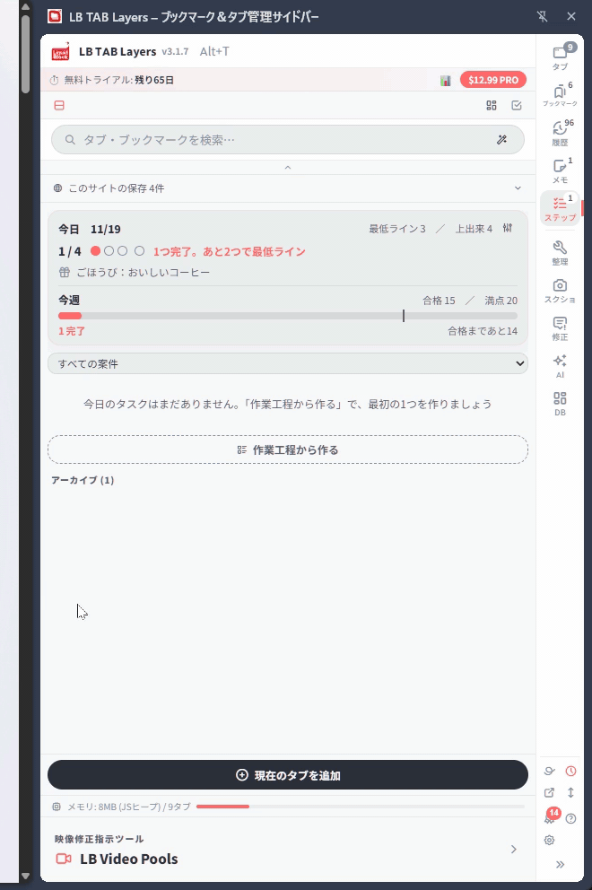
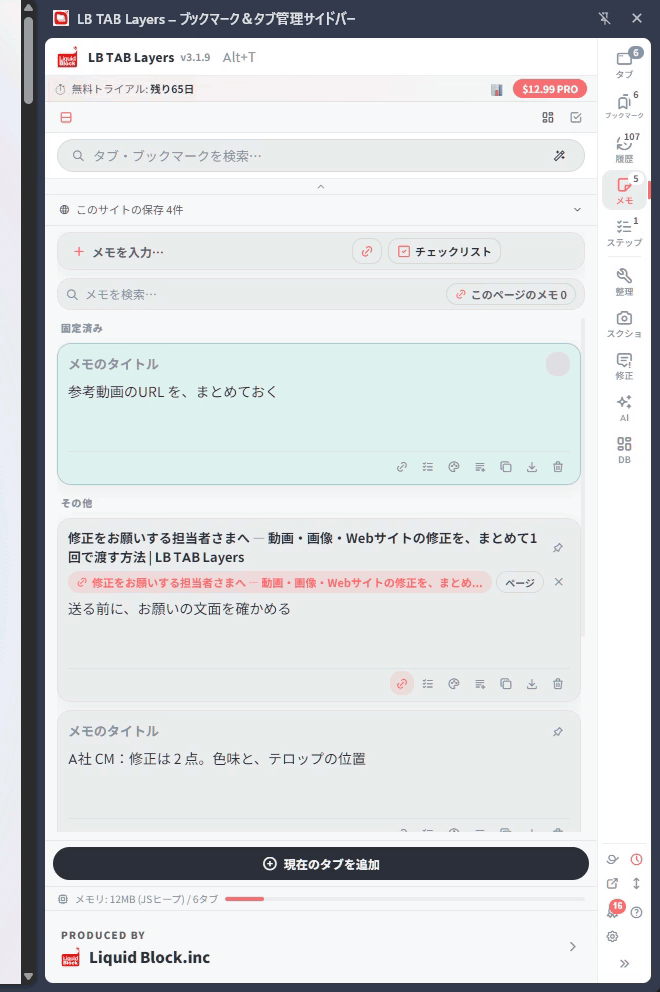
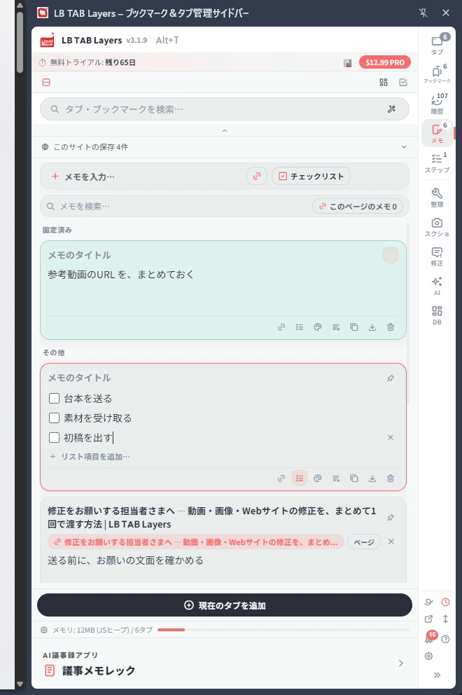
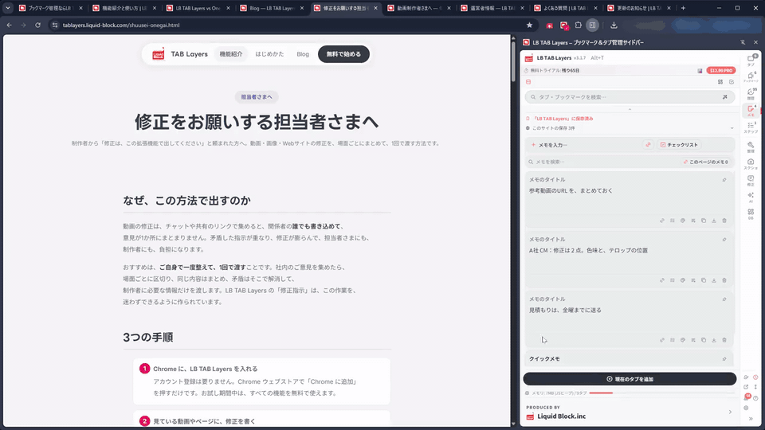
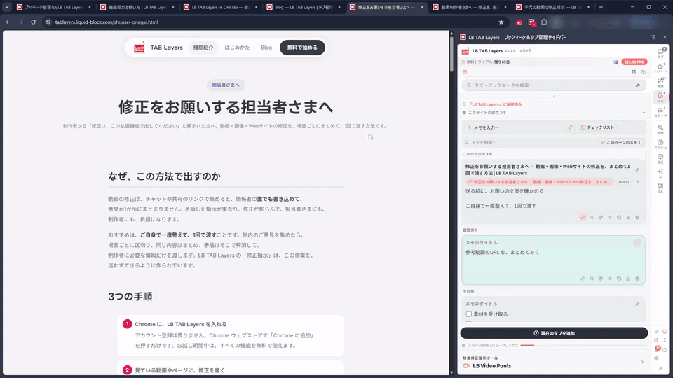
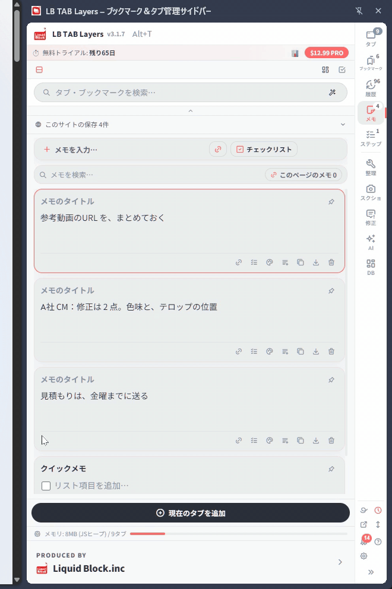
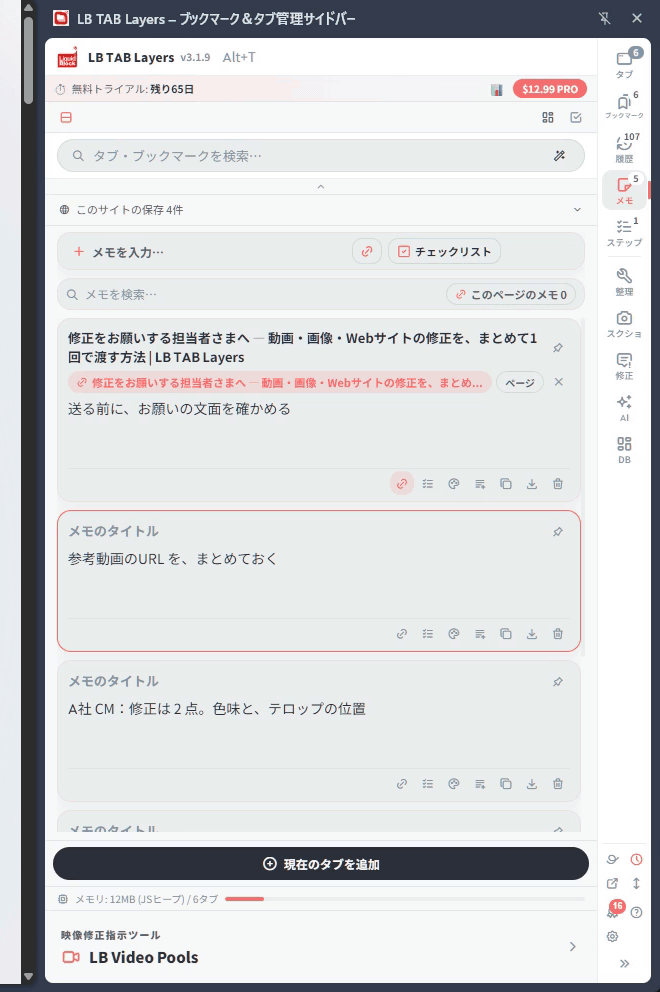
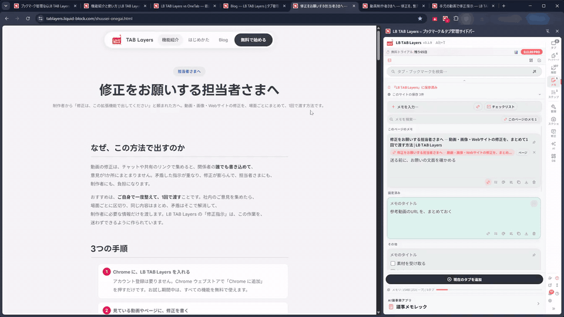
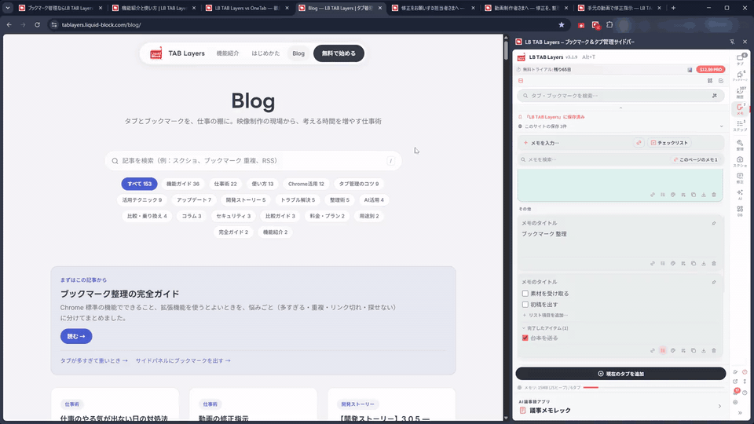

メモを書く
思いついたことを、すぐ書く。自動で保存される
場所：「メモ」の画面の「＋」
右の列の「メモ」で、メモの画面になります。「メモを入力…」を押すと新しいメモができ、打った内容は自動で保存されます。

思いついたことを、すぐ書く。自動で保存される
場所：「メモ」の画面の「＋」
右の列の「メモ」で、メモの画面になります。「メモを入力…」を押すと新しいメモができ、打った内容は自動で保存されます。

やることを、チェックの付く行にする。済んだものは下にまとまる
場所：「チェックリスト」
「チェックリスト」で、チェックの付くメモを作ります。Enter で次の行、空の行で Backspace を押すとその行が消えます。済んだ項目は、下の「完了したアイテム」にまとまります。


今見ているページに、メモを付ける。そのページを開くと、上に出る
場所：鎖のボタン
メモの画面の鎖のボタンで、今見ているページに付いたメモを作ります。メモにはページの名前が付き、そのページを開くと一番上に出ます。「このページのメモ」を押すと、そのページのメモだけにしぼれます。

メモを、サイト全体や、グループに付ける
場所：メモの下の鎖
メモの下の鎖から、このページ・このサイト全体・グループに付けられます。グループに付けたメモは、そのグループの見出しに 📝 の数が出ます。

言葉で探す。「このページのメモ」だけにもしぼれる
場所：メモの画面の上
メモの画面の「メモを検索…」で、題名・本文・チェックの項目・付けたページの名前から探せます。言葉を空白で区切ると、すべてを含むメモにしぼれます。

大事なメモを上に固定する。8 色で色分けする
場所：メモの右上／下
ピンで、大事なメモを上に固定します。パレットで 8 色から色を選べます。

Markdown でコピー、テキストで保存、削除
場所：メモの下
メモの下のボタンから、Markdown の形でコピーする・テキストのファイルで保存する・削除する、ができます。
ページの文字を選んで右クリックすると、そのページのメモに足される
場所：ページの右クリック
ページの文字を選んで右クリックし、「選んだ文字をメモに追加」を選ぶと、そのページのメモに足されます。パネルを閉じていても使えます。

メモの内容を、ページの入力欄（メール・チャットなど）に入れる
場所：メモの下／入力欄の右クリック
メモの下の「ページの入力欄に入れる」で、最後に押したページの入力欄（メールやチャットなど）に、メモの文を入れます。入力欄がないときは、コピーします。PRO の機能です（お試し期間中は使えます）。

保存したタブに、短いメモを付ける
場所：保存したタブの右クリック
保存したタブを右クリックすると、そのブックマークに、短い一行のメモを付けられます。何のために取っておいたかを、残しておけます。
LB TAB Layers は、Chrome に無料で追加できます。入れたら、Alt+T で、いつでも開けます。
Chrome に無料で追加